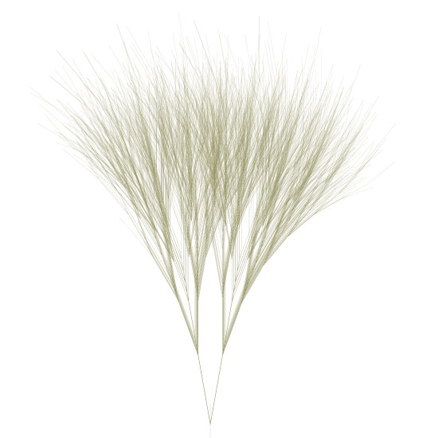
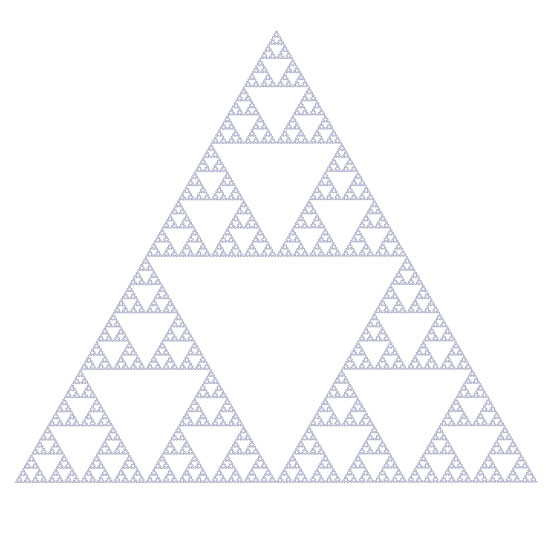

Mark Meyer has created an L-system algorithm in NodeBox. An L-system or Lindenmayer system is a set of rules and symbols used to model the growth processes of plant development - you may remember it from Dryad. L-systems are based on recursion - a programming principle in which parts of the whole involve invoking the whole again (e.g. a branch of a tree is a small tree in itself, etc.) Mark has shared his code with us so now we can all experiment with L-systems!
You may also want to check out some of Mark's beautiful photography on his website.
Grass

Here are the rules used to create the output. The rule system is a simple dictionary - it
should be pretty self explanatory. For a rule like: X -> F[+X][-X]FX just add a entry
to the rules dictionary like rules['X'] = 'F[+X][-X]FX'. The letters represent other
rules so in the above rule we need to make sure there is also a rule defined for F or we get a
key error.
This one uses a scale factor with each iteration of .95--it's in the code but commented
out.
segmentLength = 195
angles: 10, -10
begin -> A
A -> A[-B][+B]
B -> A[-B]A[+A]
iterations: 8
Plant

segmentLength = 3
angles: 25.7 -8
begin -> X
X -> F[+X][-X]FX
F -> FF
iterations: 8
Tree

segmentLength = 18
angles: 30, -30
begin -> A
A -> A[-B][+B]
B -> A[-B]A[+A-B]
iterations: 9
Sierpinski

The famous Sierpinksi Triangle.
segmentLength = 1
angles: 60, -60
begin -> A
A -> B+A+B
B -> A-B-A
iterations: 10
Sierpinski variant

Illustrates how a minor change has major effects - same rules but one angle changed by .25
degree.
segmentLength = 3
angles: 60, -60.25
begin -> A
A -> B+A+B
B -> A-B-A
iterations: 8
Spirograph

Single rule, no branching.
segmentLength = 350
angles: 251, 252
begin -> F
F ->F-F+F+F-F
iterations: 5
The source:
# by mark meyer | http://www.photo-mark.com | enjoy. size(600, 800) strokewidth(1) stroke(.45, .45, .25, .35) nofill() translate(300, 800) #starting point segmentLength = 3 rightTurnAngle = 25.7 leftTurnAngle = -25.7 rules= {} # The symbold for the formal language are: # [ = save state (i.e push()). ] = restore state (i.e. pop()). # + and - = turn right and left respectively (based on angles given above) # Other symbolds are recursively substituted # and then processed as a draw forward instruction rules['w'] = 'X' # This is the starting rule rules['X'] = 'F[+X][-X]FX' rules['F'] = 'FF' # Be careful with large numbers of iterations, # the complexity grows exponentially iterations = 8 def draw(): beginpath(0, 0) lineto(0, -segmentLength) endpath() transform(mode=CORNER) translate(0, -segmentLength) def iterate(n, rule): if rule == '+': rotate(rightTurnAngle) return elif rule == '-': rotate(leftTurnAngle) return elif rule == "[": push() return elif rule == "]": pop() return if n > 0: #scale(.98) # scaling on each iteration is fun to play with for step in rules[rule]: iterate(n-1, step) else: draw() iterate(iterations, 'w')
Created by Mark Meyer